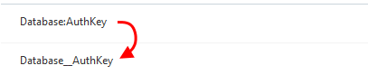

Environment variables in an Azure Web App for Containers
Here’s a little gotcha I ran into. A .net core app I wrote needs to run inside a container and the target was a Web App for Containers on the Azure platform. No big deal so far.
The app also needs a few settings for it to do its work. We provide these via environment variables for maximum flexibility. After setting up some CI/CD stuff and deploying the app it wouldn’t start because it wasn’t loading the settings.
But why?? The spec is pretty clear on how to write the keys for the settings in such a way that .net understands them.

So the secret sauce to this problem is replacing : in the settings for your app with __ (that’s 2 underscores). I managed to get to this by messing around (there were some other settings with just 1 _ as well …) and I wasn’t able to find an official source for this.
It probably has something to do with passing stuff on the command-line that launches the container and the arguments containing :-characters, I have no idea. Using __ is what works right now 🙂